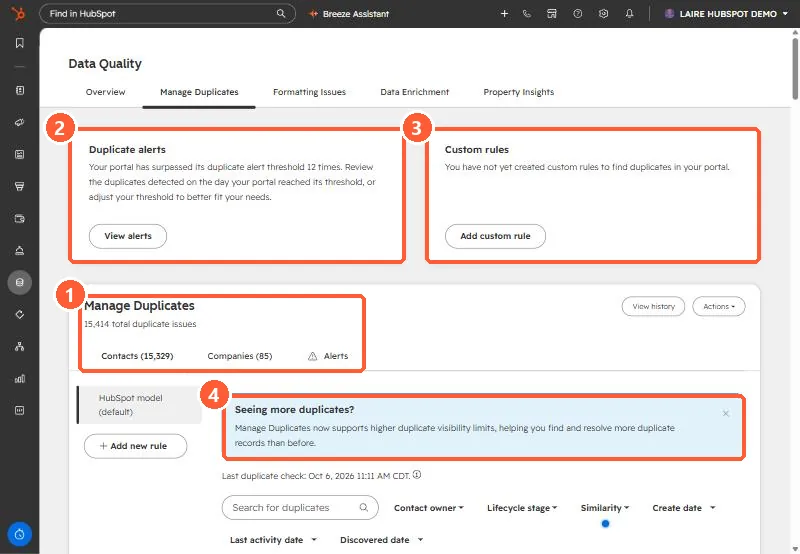

Short answer
Data Quality > Manage Duplicates lists suspected duplicate pairs for contacts and companies. With Professional or Enterprise you can manage individual pairs and see up to 10,000 pairs at a time. You can add custom duplicate rules and review alerts when duplicates pass a daily threshold (Data Hub Professional and Enterprise). A record cannot be merged once it has been part of 250 or more merges in total.
1. The tool
My demo portal shows 15,414 duplicate issues: 15,329 contacts and 85 companies. It has passed its duplicate alert threshold 12 times and has no custom rules.


2. Work in batches
- Use the filters (owner, lifecycle stage, similarity, create and activity dates) to take one slice at a time.
- Start with the highest similarity, where a merge is least likely to be wrong.
- Reject pairs that are genuinely different, so they stop coming back.
3. Before merging
- Merges cannot be undone. Read merging two records for which values survive.
- If duplicates came from an import or an integration, fix the source first. See duplicates after an import and phone format duplicates.